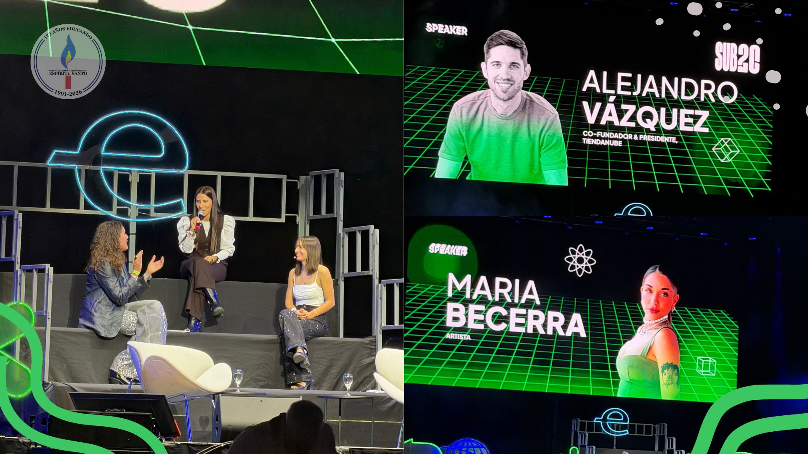

Experiencia Endeavor sub20
Por: Jacqueline Micaela Gonzalez

Participaron los alumnos de 5°A y 5°B.
El Martes 28 de Abril, los estudiantes de ambos 5to, acompañados por los docentes Karla Pérez Monet, Ricardo Barboza; y cientos de colegios más visitamos el Movistar Arena para asistir a una charla organizada por Endeavor, donde distintos emprendedores y referentes compartieron sus experiencias y aprendizajes en el mundo de los negocios.
En el evento participaron varias figuras destacadas como Martín Migoya, Alejandro Vázquez y Ariel Sbdar, quienes hablaron sobre cómo lograron hacer crecer sus empresas desde cero y los desafíos que enfrentaron en el camino.
Luego incluyó la participación de Patricia Jebsen, quien entrevistó a jóvenes que recién están comenzando sus propios proyectos. Entre ellos estuvieron Juan Cereigido quien creó el famoso aparato "ATO" para personas mayores, Angi Gastón, Francisco Rodríguez, Marc Miguez, quien ahora tiene cuatro negocios de comida con tan solo 16 años, y Martina Talamona, quien se encuentra en la final de una competencia de robótica internacional representando al país. Estos testimonios mostraron que no hay una única edad ni un único camino para emprender, y que empezar desde joven también es posible.
Como invitada especial, participó María Becerra, quien compartió su recorrido personal y profesional, contando cómo fue construyendo su carrera desde sus inicios hasta convertirse en una artista reconocida. Su historia resaltó la importancia del esfuerzo y confianza en uno mismo.
A lo largo de la charla, los distintos emprendedores coincidieron en que emprender no es fácil, hablaron de errores, fracasos y momentos difíciles. Sin embargo, destacaron que esas experiencias son fundamentales para aprender, crecer y seguir adelante.
La charla nos resultó muy interesante, ya que nos permitió acercarnos a experiencias reales y actuales, mostrando que el camino del emprendimiento es desafiante, pero también muy motivador.